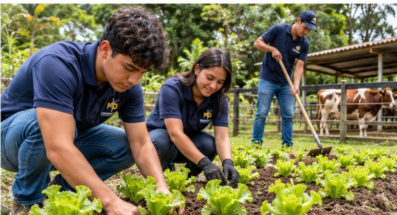

Proyectos
En la granja se realizan prácticas agrícolas y pecuarias, proyectos de investigación y experimentos académicos. Cada semestre se desarrollan aproximadamente 65 proyectos que fortalecen el aprendizaje de los estudiantes.
Granja Ecológica UNIMINUTO
Un encuentro entre la tierra, la educación y el conocimiento.
Conoce nuestra granja, un espacio que conecta la naturaleza con el aprendizaje. En esta sección podrás descubrir su historia, sus objetivos y las actividades que se desarrollan en ella.
Conoce nuestros orígenes
La Granja Ecológica UNIMINUTO tiene sus orígenes en la donación de terrenos realizada por Felicidad Barrios, entre los cuales se encontraba un predio de aproximadamente 5 hectáreas. Con el tiempo, este espacio fue adquiriendo importancia para la formación académica, las prácticas agrícolas y pecuarias y el desarrollo de investigaciones.
Su desarrollo está relacionado con la formación agroecológica de la universidad y el crecimiento de sus espacios académicos, convirtiéndose en un lugar de aprendizaje práctico e investigación.

Aprendizaje y naturaleza
La granja busca fortalecer el aprendizaje de los estudiantes mediante actividades agrícolas, pecuarias y ambientales. Su propósito es integrar la teoría con la práctica, promover la investigación y fomentar el conocimiento sobre los sistemas productivos y el cuidado de la naturaleza.
Entre sus principales propósitos están impulsar proyectos de investigación, desarrollar prácticas agropecuarias, fortalecer la formación académica y promover el uso responsable de los recursos naturales.

Descubre más
Este apartado reunirá información breve y curiosidades verificadas sobre la granja.
En la granja se realizan prácticas agrícolas y pecuarias, proyectos de investigación y experimentos académicos. Cada semestre se desarrollan aproximadamente 65 proyectos que fortalecen el aprendizaje de los estudiantes.
La granja realiza prácticas agrícolas y pecuarias, investigaciones y experimentos académicos. Cada semestre se desarrollan cerca de 65 proyectos que fortalecen el aprendizaje práctico de los estudiantes.
La granja cuenta con aproximadamente 26 zonas productivas, donde se cultiva cacao y cítricos. También tiene animales como pollos, cerdos, bovinos y una yegua, además de actividades de piscicultura y lombricultura.
Estos contenidos son una guía de organización y deben completarse después de consultar fuentes confiables.